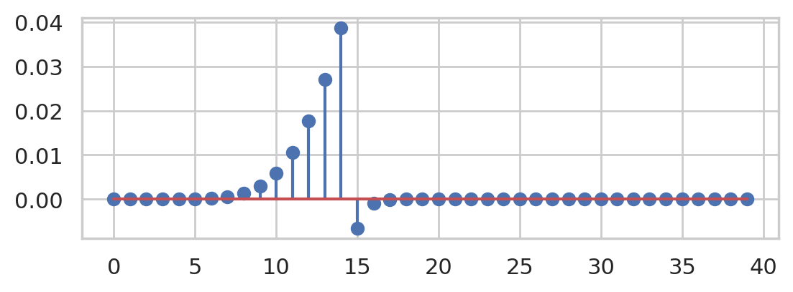
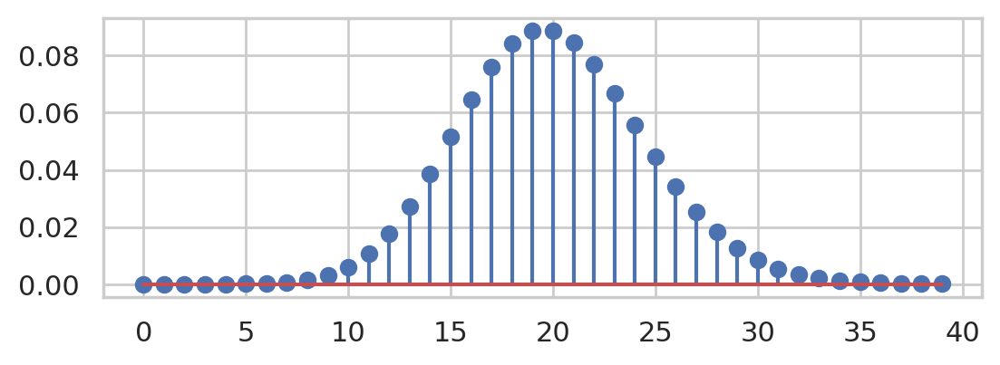
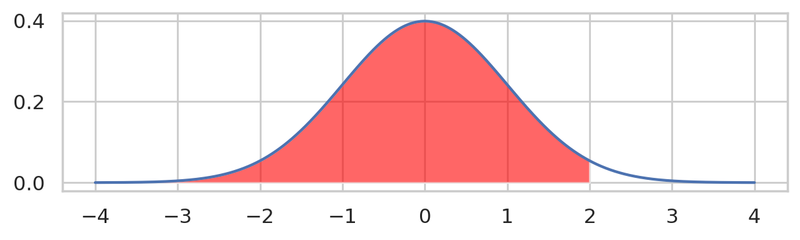
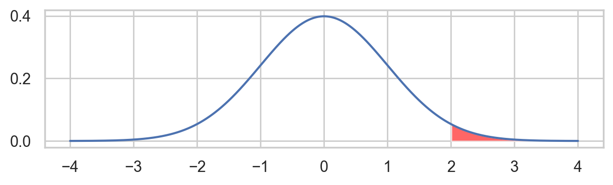
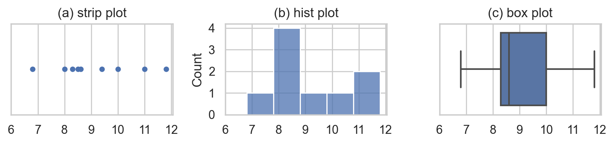

CUT MATERIAL#
Notebook setup#
# Figures setup
import matplotlib.pyplot as plt
import seaborn as sns
plt.clf() # needed otherwise `sns.set_theme` doesn't work
sns.set_theme(
style="whitegrid",
rc={'figure.figsize': (6.25, 2.0)},
)
# High-resolution figures please
%config InlineBackend.figure_format = 'retina'
def savefig(fig, filename):
fig.tight_layout()
fig.savefig(filename, dpi=300, bbox_inches="tight", pad_inches=0)
<Figure size 640x480 with 0 Axes>
Pandas equivalent#
import pandas as pd
grades = [80, 90, 70, 60]
gseries = pd.Series(grades)
gseries.mean()
75.0
\(N \sim \mathcal{N}(\mu,\sigma)\) has the probability density function:
where \(\mu\) is the mean and \(\sigma\) is the standard deviation.
We use the notation \(\mathcal{N}(\mu, \sigma)\) to describe the distribution as math,
and norm(mu,sigma) to describe as computer model.
import numpy as np
def fN(x, mu=0, sigma=1):
const = 1 / (sigma*np.sqrt(2*np.pi))
exp = np.exp( -1/2 * ( (x-mu)/sigma )**2 )
return const * exp
fN(3, 2, 3)
0.12579440923099774
def mean(sample):
total = 0
for xi in sample:
total = total + xi
avg = total / len(sample)
return avg
Problem NN (numerical math considerations)#
We’ll use the Python library NumPy (module numpy imported as np)
to help us with the fancy math operations.
To compute \(e^x\) we can call np.exp(x),
and to compute the factorial of n we can call np.math.factorial(n).
import numpy as np
def fH(h):
lam = 20
return lam**h * np.exp(-lam) / np.math.factorial(h)
# calculation is not stable for h > 14
import matplotlib.pyplot as plt
import numpy as np
hs = np.arange(0,40)
fHs = [fH(h) for h in hs]
plt.stem(fHs)
<StemContainer object of 3 artists>

We can apply the log-trick to the formula for …
from scipy.special import gammaln
def fHalt(h):
lam = 20
return np.exp(h * np.log(lam) - lam - gammaln(h + 1))
fHalts = [fHalt(h) for h in hs]
plt.stem(fHalts)
<StemContainer object of 3 artists>

The log-transform trick and gammaln function are really useful for dealing with large factorials and multiplications of small probabilities,
which occur a lot in statistical calculations.
The need for numerical stability is one thing you need to keep in mind when
you implement statistical algorithms in production.
from scipy.stats import norm
rvZ = norm(0,1)
The cumulative distribution function (CDF) \(F_Z\) is defined as the integral of the probability density function \(f_Z\) up to some value \(z=b\).
The computer model rvZ provides the method .cdf which allows us to obtain the values of \(F_Z\) directly.
rvZ.cdf(2)
0.9772498680518208
# FIGURES ONLY
zs = np.linspace(-4, 4, 1000)
fZs = rvZ.pdf(zs)
ax = sns.lineplot(x=zs, y=fZs)
mask = (zs < 2)
ax.fill_between(zs[mask], y1=fZs[mask], alpha=0.6, facecolor="red")
savefig(ax.figure, "figures/pdf_of_rvZ_highlight_-infty_to_2.png")
---------------------------------------------------------------------------
FileNotFoundError Traceback (most recent call last)
Cell In[10], line 7
5 mask = (zs < 2)
6 ax.fill_between(zs[mask], y1=fZs[mask], alpha=0.6, facecolor="red")
----> 7 savefig(ax.figure, "figures/pdf_of_rvZ_highlight_-infty_to_2.png")
Cell In[1], line 15, in savefig(fig, filename)
13 def savefig(fig, filename):
14 fig.tight_layout()
---> 15 fig.savefig(filename, dpi=300, bbox_inches="tight", pad_inches=0)
File /opt/hostedtoolcache/Python/3.8.18/x64/lib/python3.8/site-packages/matplotlib/figure.py:3378, in Figure.savefig(self, fname, transparent, **kwargs)
3374 for ax in self.axes:
3375 stack.enter_context(
3376 ax.patch._cm_set(facecolor='none', edgecolor='none'))
-> 3378 self.canvas.print_figure(fname, **kwargs)
File /opt/hostedtoolcache/Python/3.8.18/x64/lib/python3.8/site-packages/matplotlib/backend_bases.py:2366, in FigureCanvasBase.print_figure(self, filename, dpi, facecolor, edgecolor, orientation, format, bbox_inches, pad_inches, bbox_extra_artists, backend, **kwargs)
2362 try:
2363 # _get_renderer may change the figure dpi (as vector formats
2364 # force the figure dpi to 72), so we need to set it again here.
2365 with cbook._setattr_cm(self.figure, dpi=dpi):
-> 2366 result = print_method(
2367 filename,
2368 facecolor=facecolor,
2369 edgecolor=edgecolor,
2370 orientation=orientation,
2371 bbox_inches_restore=_bbox_inches_restore,
2372 **kwargs)
2373 finally:
2374 if bbox_inches and restore_bbox:
File /opt/hostedtoolcache/Python/3.8.18/x64/lib/python3.8/site-packages/matplotlib/backend_bases.py:2232, in FigureCanvasBase._switch_canvas_and_return_print_method.<locals>.<lambda>(*args, **kwargs)
2228 optional_kws = { # Passed by print_figure for other renderers.
2229 "dpi", "facecolor", "edgecolor", "orientation",
2230 "bbox_inches_restore"}
2231 skip = optional_kws - {*inspect.signature(meth).parameters}
-> 2232 print_method = functools.wraps(meth)(lambda *args, **kwargs: meth(
2233 *args, **{k: v for k, v in kwargs.items() if k not in skip}))
2234 else: # Let third-parties do as they see fit.
2235 print_method = meth
File /opt/hostedtoolcache/Python/3.8.18/x64/lib/python3.8/site-packages/matplotlib/backends/backend_agg.py:509, in FigureCanvasAgg.print_png(self, filename_or_obj, metadata, pil_kwargs)
462 def print_png(self, filename_or_obj, *, metadata=None, pil_kwargs=None):
463 """
464 Write the figure to a PNG file.
465
(...)
507 *metadata*, including the default 'Software' key.
508 """
--> 509 self._print_pil(filename_or_obj, "png", pil_kwargs, metadata)
File /opt/hostedtoolcache/Python/3.8.18/x64/lib/python3.8/site-packages/matplotlib/backends/backend_agg.py:458, in FigureCanvasAgg._print_pil(self, filename_or_obj, fmt, pil_kwargs, metadata)
453 """
454 Draw the canvas, then save it using `.image.imsave` (to which
455 *pil_kwargs* and *metadata* are forwarded).
456 """
457 FigureCanvasAgg.draw(self)
--> 458 mpl.image.imsave(
459 filename_or_obj, self.buffer_rgba(), format=fmt, origin="upper",
460 dpi=self.figure.dpi, metadata=metadata, pil_kwargs=pil_kwargs)
File /opt/hostedtoolcache/Python/3.8.18/x64/lib/python3.8/site-packages/matplotlib/image.py:1689, in imsave(fname, arr, vmin, vmax, cmap, format, origin, dpi, metadata, pil_kwargs)
1687 pil_kwargs.setdefault("format", format)
1688 pil_kwargs.setdefault("dpi", (dpi, dpi))
-> 1689 image.save(fname, **pil_kwargs)
File /opt/hostedtoolcache/Python/3.8.18/x64/lib/python3.8/site-packages/PIL/Image.py:2563, in Image.save(self, fp, format, **params)
2561 fp = builtins.open(filename, "r+b")
2562 else:
-> 2563 fp = builtins.open(filename, "w+b")
2564 else:
2565 fp = cast(IO[bytes], fp)
FileNotFoundError: [Errno 2] No such file or directory: '/home/runner/work/noBSstats/noBSstats/blogposts/figures/pdf_of_rvZ_highlight_-infty_to_2.png'

We’re often interested in computing the complement,
1 - rvZ.cdf(2)
0.02275013194817921
# FIGURES ONLY
zs = np.linspace(-4, 4, 1000)
fZs = rvZ.pdf(zs)
ax = sns.lineplot(x=zs, y=fZs)
mask = (zs > 2)
ax.fill_between(zs[mask], y1=fZs[mask], alpha=0.6, facecolor="red")
savefig(ax.figure, "figures/pdf_of_rvZ_highlight_2_to_infty.png")

In statistics, we often have to compute the probability in one or both tails of the distribution, which corresponds the probability of observing “extreme values”
\(\textrm{Pr}(\{Z \geq 2\}) = \int_{z=2}^{z=\infty} f_Z(z) dz\)
from scipy.integrate import quad
quad(rvZ.pdf, 2, np.inf)[0]
0.02275013194817598
The cumulative distribution function (CDF) \(F_Z\) is defined as the integral of the probability density function \(f_Z\) up to some value \(z=b\).
The computer model rvZ provides the method .cdf which allows us to obtain the values of \(F_Z\) directly.
For example, \(F_Z(-2) = \textrm{Pr}(\{Z \leq -2\})\) can be computed as follows.
rvZ.cdf(-2)
0.022750131948179195
prices = [11.8, 10, 11, 8.6, 8.3, 9.4, 8, 6.8, 8.5]
# FIGURES ONLY
import matplotlib.pyplot as plt
import seaborn as sns
with plt.rc_context({"figure.figsize":(8,2)}):
fig, (ax1, ax2, ax3) = plt.subplots(1,3)
ax1.set_title("(a) strip plot")
sns.stripplot(x=prices, ax=ax1, jitter=0)
ax1.set_xticks(range(6,13))
ax2.set_title("(b) hist plot")
sns.histplot(x=prices, ax=ax2)
ax2.set_xticks(range(6,13))
ax2.set_yticks(range(0,5))
ax3.set_title("(c) box plot")
sns.boxplot(x=prices, ax=ax3)
ax3.set_xticks(range(6,13))
savefig(fig, "figures/epricesW_strip_hist_box_plots.png")

Manual calculations#
len(prices)
9
mean(prices)
9.155555555555555
def std(values):
avg = mean(values)
sqdevs = sum([(v-avg)**2 for v in values])
var = sqdevs / (len(values) - 1)
return var**(1/2)
std(prices)
1.5621388471508473
2**(1/2)
1.4142135623730951
Data cleaning#
import pandas as pd
epriceswide = pd.read_csv("https://nobsstats.com/datasets/epriceswide.csv")
print(epriceswide)
East West
0 7.7 11.8
1 5.9 10.0
2 7.0 11.0
3 4.8 8.6
4 6.3 8.3
5 6.3 9.4
6 5.5 8.0
7 5.4 6.8
8 6.5 8.5
Data transformation#
Once you have your hands on the data in some form, Pandas offers many functions for data transformations like selection of subsets, combining datasets, and other pre-processing steps on the raw data, in preparation for statistical analysis.
One of the most common data transformation steps is to convert data from “wide” format into “long” format, which is also known as “tidy data.”
Click here to see a visualization of the melt operation on the epriceswide data frame into a tidy data frame eprices.
A discussion about tidy data is beyond the scope of this blog post, so I’ll refer you to this blog post and video tutorials that will explain why tidy data is useful for doing statistics.
Click here to see a visualization of the above melt operation.
epriceswide= pd.read_csv("../datasets/epriceswide.csv")
eprices = pd.melt(epriceswide, var_name="loc", value_name='price')
print(eprices)
loc price
0 East 7.7
1 East 5.9
2 East 7.0
3 East 4.8
4 East 6.3
5 East 6.3
6 East 5.5
7 East 5.4
8 East 6.5
9 West 11.8
10 West 10.0
11 West 11.0
12 West 8.6
13 West 8.3
14 West 9.4
15 West 8.0
16 West 6.8
17 West 8.5
pricesW = eprices[eprices["loc"]=="West"]["price"]
pricesE = eprices[eprices["loc"]=="East"]["price"]
pricesW.values
array([11.8, 10. , 11. , 8.6, 8.3, 9.4, 8. , 6.8, 8.5])
pricesE.values
array([7.7, 5.9, 7. , 4.8, 6.3, 6.3, 5.5, 5.4, 6.5])